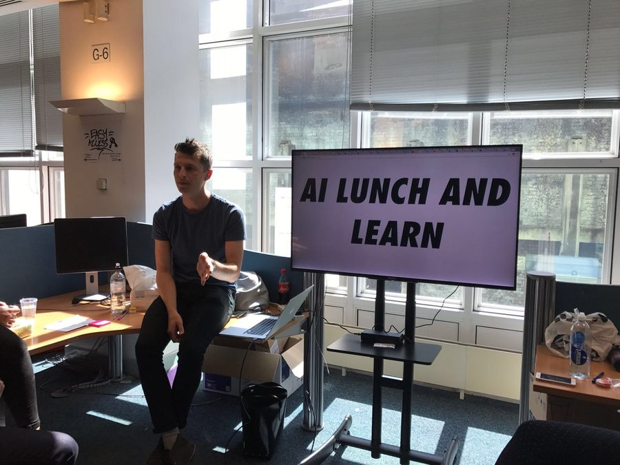

"Doing the hard work to make it simple" is about as close as I've got to a personal mission statement, and it plays out at both ends of the job. I can run a room through a genuinely difficult, ambiguous problem and get it into a plan — then stay close enough to the engineers and product people building it to keep the work honest all the way to launch. I'm just as comfortable standing in front of a leadership team making the case in three sentences, pushing back where a plan doesn't hold up, as I am heads-down in the detail myself.
Facilitation through to delivery: I can take a room full of conflicting views and messy problems and get it into a plan everyone believes in, then stay hands-on with product and engineering colleagues until the right thing actually ships.
Executive storytelling: turning a complex strategy into a story a room will act on, from a TEDx stage to a board update — I still reach for a hand-drawn map before a slide deck.
Hands-on craft: trained as an illustrator, and it shows. I'm still happiest sketching a flow, testing it with real customers, or writing the copy myself.
Positive challenge: comfortable pushing back on a leadership team, a roadmap, or my own team's thinking when the work doesn't hold up — without losing the room.
Team building: I've built design teams from scratch three times over. The people I've hired go on to lead elsewhere, which is the scorecard I actually care about.

Running an AI lunch and learn back in my Lloyds time
I've selected three recent examples that best bring this to life.
012024 — Present
JPMorgan Chase
Design Director · London
7 → 21 designers. 300k colleagues, one self-cert flow.
Compliance design at JPMorgan was tactical and invisible before I got there. I built the team from 7 to 21 and rebuilt cross-firm self-certification as a single human-language conversation for 300,000 colleagues, alongside an ML platform replacing two surveillance vendors. It's now the most cited design function on the corporate side of the firm — and I run a 500-engineer AI design school for fun.
4G Capital is Africa's leading neobank and a certified B Corp, serving customers and small businesses across Kenya and Uganda that mainstream banks overlook. When I joined, there was no dedicated product design function, and the technology stack was holding the business back.
I built a product design team from scratch and tackled the design of the colleague and customer service as one, leveraging an idea I developed at Lloyds Banking Group. The existing customer service ran on a simple shortcode (a popular East-African SMS-based technology) journey, which formed the backbone of how I scoped and designed the Android app. My role was to use service design to map the existing process, tech stack and customer/colleague journey, then design the IA, content strategy, and key screens and journeys for both customer and colleague services.
Colleague home — daily targetsLeads & customersColleague app and the notebook it was replacing.Mapping new journeys with Jose and Christine.
In five years I grew a service design capability from 0 to 34 designers, then became design director for retail, shaping a wider team of 100 and setting the vision for what great looked like across every surface. I finished by product designing a new digital service end to end, then ran a 'run-ahead' team using emerging tech to solve problems customers hadn't been able to name yet.
Tracks — spending by categoryBills — all in one placeExplore — plans for the futureConcept comparison.
I was across a number of projects, including:
The mobile cheque deposit journey, still in use in the Lloyds Bank app today. My role: service design.
The consumer app design team that delivered a 14-point NPS increase. My role: design leadership and mentoring.
Designing a future-facing version of the B2C service. My role: design leadership, IA, content design and screen design.
I'm also proud of the work I pioneered to assess and grow skills within the design team.
This video does a nice job of linking my illustration degree to my work at Lloyds: